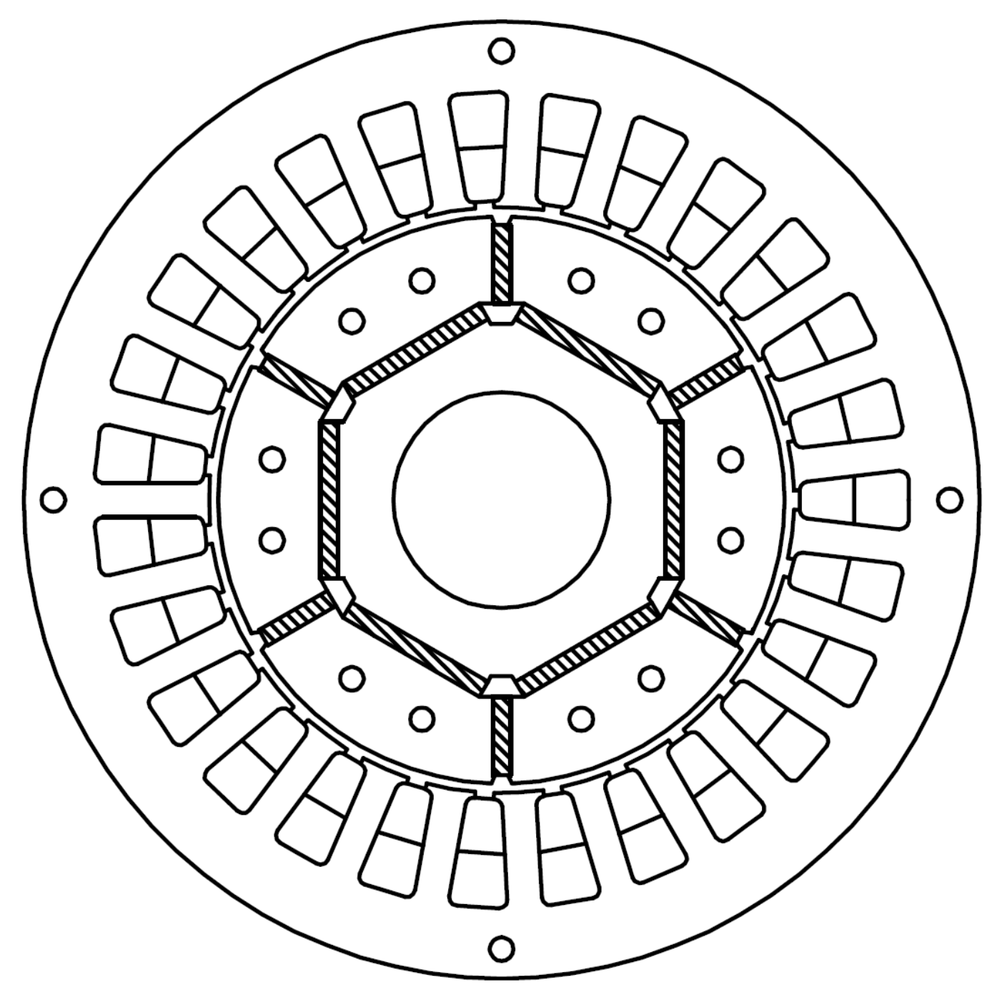
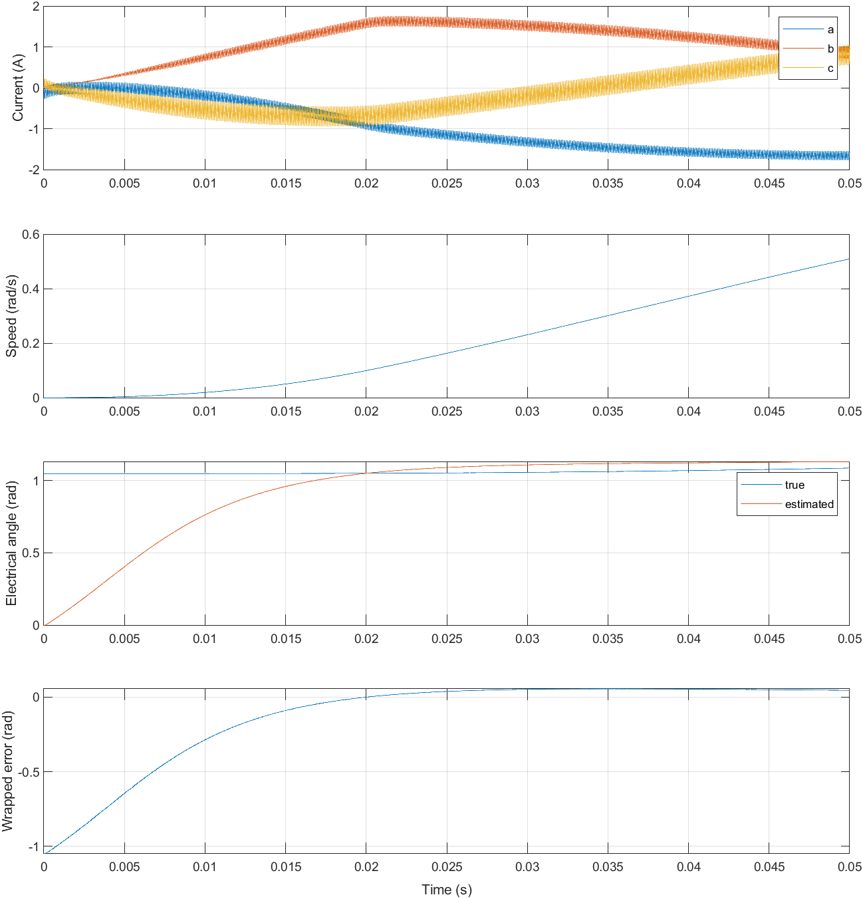

Electrical Engineering and Automation
LIU ZILI
I use motor models and current signals to study how rotor position can be estimated at low speed.
Explore my undergraduate project
Undergraduate thesis
Estimating rotor position at low speed
My project investigates how pulsating high-frequency signal injection can help estimate the rotor electrical angle of an interior permanent magnet synchronous motor (IPMSM) at standstill and low speed.
- Model the motor
- I built the IPMSM model in MATLAB/Simulink and checked its simulation outputs.
- Process the current response
- I implemented separate modules to process the current signals and estimate rotor electrical angle.
- Compare against a reference
- I compared estimates with the model’s reference angle using simulations with high-frequency injection enabled and disabled.
MATLAB/Simulink results
What changes with injection?
Both runs show the first 0.05 seconds of simulation. The plots compare three-phase currents, speed, rotor electrical angle and wrapped angle error.
Injection enabled
The estimated angle approaches the model reference, and the wrapped error falls close to zero over the displayed interval.
Open full-size plot

Injection disabled
The estimated angle stays at zero over the displayed interval, while the model reference remains near one radian.
Open full-size plot
Technical skills
- MATLAB/Simulink modeling
- Build motor models, connect estimation modules and inspect simulated signals.
- Current signal processing
- Process phase current signals for position estimation and compare their waveforms across conditions.
- Rotor electrical angle estimation
- Implement an angle estimator and assess tracking against a model reference using wrapped angle error.
- Simulation data analysis
- Interpret current, speed and position traces together to explain results under the tested conditions.
Areas of expertise
Low-speed motor position estimation
I break the problem into modeling, current processing and angle estimation, checking the output of each step.
Comparative simulation for motor control
I use paired simulations and a shared reference to see how a change in the estimation method affects tracking.
Further reading
IPMSM signal injection in motulator
This Python example from Aalto Electric Drives explores square-wave signal injection with a phase-locked loop.